Last updated: 2026-03-23
Checks: 7 0
Knit directory: muse/
This reproducible R Markdown analysis was created with workflowr (version 1.7.2). The Checks tab describes the reproducibility checks that were applied when the results were created. The Past versions tab lists the development history.
Great! Since the R Markdown file has been committed to the Git repository, you know the exact version of the code that produced these results.
Great job! The global environment was empty. Objects defined in the global environment can affect the analysis in your R Markdown file in unknown ways. For reproduciblity it’s best to always run the code in an empty environment.
The command set.seed(20200712) was run prior to running
the code in the R Markdown file. Setting a seed ensures that any results
that rely on randomness, e.g. subsampling or permutations, are
reproducible.
Great job! Recording the operating system, R version, and package versions is critical for reproducibility.
Nice! There were no cached chunks for this analysis, so you can be confident that you successfully produced the results during this run.
Great job! Using relative paths to the files within your workflowr project makes it easier to run your code on other machines.
Great! You are using Git for version control. Tracking code development and connecting the code version to the results is critical for reproducibility.
The results in this page were generated with repository version eb51700. See the Past versions tab to see a history of the changes made to the R Markdown and HTML files.
Note that you need to be careful to ensure that all relevant files for
the analysis have been committed to Git prior to generating the results
(you can use wflow_publish or
wflow_git_commit). workflowr only checks the R Markdown
file, but you know if there are other scripts or data files that it
depends on. Below is the status of the Git repository when the results
were generated:
Ignored files:
Ignored: .Rproj.user/
Ignored: data/1M_neurons_filtered_gene_bc_matrices_h5.h5
Ignored: data/293t/
Ignored: data/293t_3t3_filtered_gene_bc_matrices.tar.gz
Ignored: data/293t_filtered_gene_bc_matrices.tar.gz
Ignored: data/5k_Human_Donor1_PBMC_3p_gem-x_5k_Human_Donor1_PBMC_3p_gem-x_count_sample_filtered_feature_bc_matrix.h5
Ignored: data/5k_Human_Donor2_PBMC_3p_gem-x_5k_Human_Donor2_PBMC_3p_gem-x_count_sample_filtered_feature_bc_matrix.h5
Ignored: data/5k_Human_Donor3_PBMC_3p_gem-x_5k_Human_Donor3_PBMC_3p_gem-x_count_sample_filtered_feature_bc_matrix.h5
Ignored: data/5k_Human_Donor4_PBMC_3p_gem-x_5k_Human_Donor4_PBMC_3p_gem-x_count_sample_filtered_feature_bc_matrix.h5
Ignored: data/97516b79-8d08-46a6-b329-5d0a25b0be98.h5ad
Ignored: data/Parent_SC3v3_Human_Glioblastoma_filtered_feature_bc_matrix.tar.gz
Ignored: data/brain_counts/
Ignored: data/cl.obo
Ignored: data/cl.owl
Ignored: data/jurkat/
Ignored: data/jurkat:293t_50:50_filtered_gene_bc_matrices.tar.gz
Ignored: data/jurkat_293t/
Ignored: data/jurkat_filtered_gene_bc_matrices.tar.gz
Ignored: data/pbmc20k/
Ignored: data/pbmc20k_seurat/
Ignored: data/pbmc3k.csv
Ignored: data/pbmc3k.csv.gz
Ignored: data/pbmc3k.h5ad
Ignored: data/pbmc3k/
Ignored: data/pbmc3k_bpcells_mat/
Ignored: data/pbmc3k_export.mtx
Ignored: data/pbmc3k_matrix.mtx
Ignored: data/pbmc3k_seurat.rds
Ignored: data/pbmc4k_filtered_gene_bc_matrices.tar.gz
Ignored: data/pbmc_1k_v3_filtered_feature_bc_matrix.h5
Ignored: data/pbmc_1k_v3_raw_feature_bc_matrix.h5
Ignored: data/refdata-gex-GRCh38-2020-A.tar.gz
Ignored: data/seurat_1m_neuron.rds
Ignored: data/t_3k_filtered_gene_bc_matrices.tar.gz
Ignored: r_packages_4.5.2/
Untracked files:
Untracked: .claude/
Untracked: CLAUDE.md
Untracked: analysis/.claude/
Untracked: analysis/aucc.Rmd
Untracked: analysis/bimodal.Rmd
Untracked: analysis/bioc.Rmd
Untracked: analysis/bioc_scrnaseq.Rmd
Untracked: analysis/chick_weight.Rmd
Untracked: analysis/likelihood.Rmd
Untracked: analysis/modelling.Rmd
Untracked: analysis/wordpress_readability.Rmd
Untracked: bpcells_matrix/
Untracked: data/Caenorhabditis_elegans.WBcel235.113.gtf.gz
Untracked: data/GCF_043380555.1-RS_2024_12_gene_ontology.gaf.gz
Untracked: data/SeuratObj.rds
Untracked: data/arab.rds
Untracked: data/astronomicalunit.csv
Untracked: data/davetang039sblog.WordPress.2026-02-12.xml
Untracked: data/femaleMiceWeights.csv
Untracked: data/lung_bcell.rds
Untracked: m3/
Untracked: women.json
Unstaged changes:
Modified: analysis/isoform_switch_analyzer.Rmd
Modified: analysis/linear_models.Rmd
Note that any generated files, e.g. HTML, png, CSS, etc., are not included in this status report because it is ok for generated content to have uncommitted changes.
These are the previous versions of the repository in which changes were
made to the R Markdown (analysis/gmm.Rmd) and HTML
(docs/gmm.html) files. If you’ve configured a remote Git
repository (see ?wflow_git_remote), click on the hyperlinks
in the table below to view the files as they were in that past version.
| File | Version | Author | Date | Message |
|---|---|---|---|---|
| Rmd | eb51700 | Dave Tang | 2026-03-23 | Gaussian Mixture Models |
if (!require("mclust", quietly = TRUE)) {
install.packages("mclust")
}
if (!require("ggplot2", quietly = TRUE)) {
install.packages("ggplot2")
}
library(mclust)
library(ggplot2)Imagine you measure the heights of 1,000 people at a conference and plot a histogram. If the conference is all adults from the same population, you would probably see a single bell-shaped curve centred around the average height. But what if the conference, for whatever reason, includes both professional basketball players and professional jockeys? You would likely see two overlapping bell curves: one centred around a taller average and one around a shorter average.
A Gaussian mixture model (GMM) is a way to describe data that looks like it comes from multiple overlapping bell curves. “Gaussian” is another name for the normal distribution (the bell curve), and “mixture” means we are combining several of them. The model assumes that each data point was generated by one of several Gaussian distributions, but we do not know which one generated which point.
GMMs are useful whenever you suspect your data contains hidden subgroups. In biology, different cell types may express a gene at different levels. In marketing, customers may fall into distinct spending segments. In astronomy, stars may cluster into different populations. In all these cases, the observed data is a blend of several underlying groups, and a GMM can help you tease them apart.
The normal (Gaussian) distribution is the classic bell curve. It is defined by two parameters:
The probability density function is:
\[f(x \mid \mu, \sigma) = \frac{1}{\sigma\sqrt{2\pi}} \exp\left(-\frac{(x - \mu)^2}{2\sigma^2}\right)\]
The key idea is that data drawn from a normal distribution clusters symmetrically around the mean, with most values falling within a couple of standard deviations.
set.seed(1984)
x <- seq(-6, 12, length.out = 500)
df_norm <- data.frame(
x = rep(x, 3),
density = c(
dnorm(x, mean = 0, sd = 1),
dnorm(x, mean = 4, sd = 1.5),
dnorm(x, mean = 7, sd = 0.7)
),
distribution = rep(
c("mean=0, sd=1", "mean=4, sd=1.5", "mean=7, sd=0.7"),
each = length(x)
)
)
ggplot(df_norm, aes(x = x, y = density, colour = distribution)) +
geom_line(linewidth = 1) +
labs(x = "Value", y = "Density", colour = "Parameters",
title = "Normal distributions with different parameters") +
theme_minimal()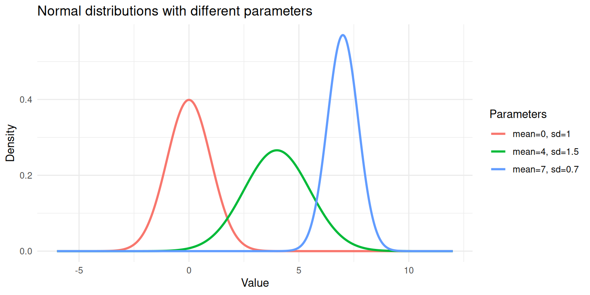
Three normal distributions with different means and standard deviations.
Each curve above is a single Gaussian. A GMM says: “My data is a weighted combination of several of these curves.”
A mixture distribution combines multiple component distributions. For a Gaussian mixture with \(K\) components, the overall density is:
\[p(x) = \sum_{k=1}^{K} \pi_k \; f(x \mid \mu_k, \sigma_k)\]
where:
Think of it like a recipe. If 60% of conference attendees are basketball players (tall) and 40% are jockeys (shorter), the mixture is:
\[p(\text{height}) = 0.6 \times f(\text{height} \mid \mu_{\text{basketball}}, \sigma_{\text{basketball}}) + 0.4 \times f(\text{height} \mid \mu_{\text{jockey}}, \sigma_{\text{jockey}})\]
The best way to understand a mixture is to build one. Let’s simulate data from two Gaussian components and see what the combined distribution looks like.
set.seed(1984)
n <- 1000
# Component 1: 60% of the data, mean = 3, sd = 1
# Component 2: 40% of the data, mean = 7, sd = 1.2
n1 <- round(n * 0.6)
n2 <- n - n1
component1 <- rnorm(n1, mean = 3, sd = 1)
component2 <- rnorm(n2, mean = 7, sd = 1.2)
# The mixture: combine the two samples
mixture <- c(component1, component2)
# Keep track of the true labels (in practice, we don't have these)
true_labels <- c(rep(1, n1), rep(2, n2))df_mix <- data.frame(
value = mixture,
component = factor(true_labels)
)
ggplot(df_mix, aes(x = value, fill = component)) +
geom_histogram(aes(y = after_stat(density)), bins = 50,
alpha = 0.6, position = "identity", colour = "white") +
geom_density(aes(colour = component), linewidth = 0.8, fill = NA) +
labs(x = "Value", y = "Density",
title = "Simulated data from a two-component Gaussian mixture",
fill = "True Component", colour = "True Component") +
theme_minimal()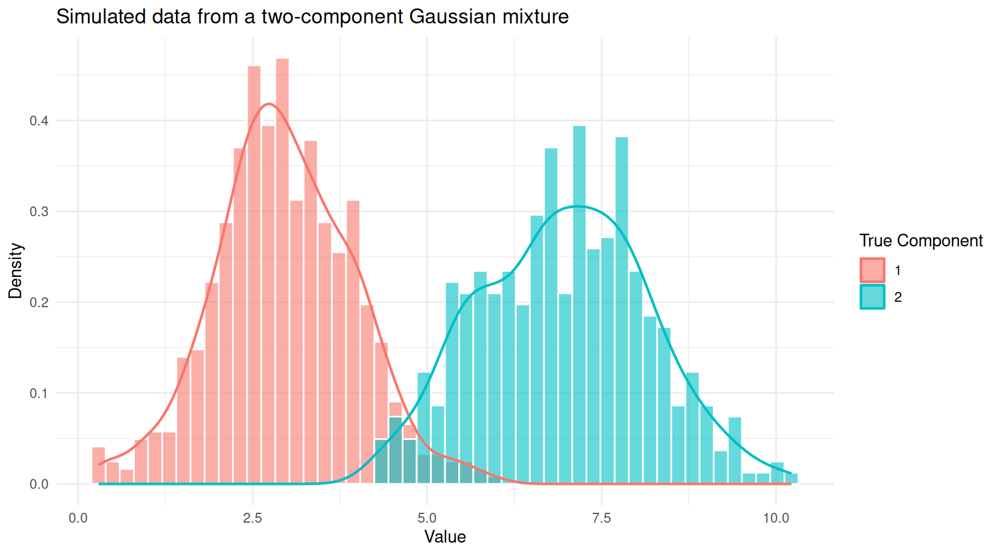
Histogram of mixture data coloured by true component membership.
You can see two overlapping humps. In practice, we would observe only the combined histogram (without the colours) and would need a GMM to recover the two underlying groups.
ggplot(df_mix, aes(x = value)) +
geom_histogram(aes(y = after_stat(density)), bins = 50,
fill = "steelblue", colour = "white", alpha = 0.7) +
geom_density(linewidth = 0.8, colour = "red") +
labs(x = "Value", y = "Density",
title = "Observed data (true component labels hidden)") +
theme_minimal()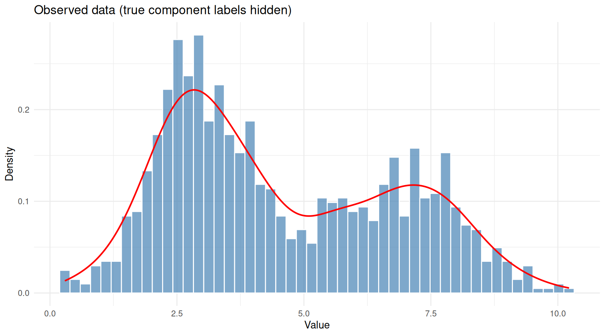
The same data viewed without component labels — this is what we actually observe.
This is the problem a GMM solves: given only the combined histogram, recover the number of components, their means, standard deviations, and mixing weights.
Fitting a GMM means estimating all the parameters (\(\pi_k\), \(\mu_k\), \(\sigma_k\) for each component). The standard approach is the Expectation-Maximisation (EM) algorithm. The intuition behind EM is surprisingly simple: it is an iterative guessing game.
If we knew which component each data point belonged to, estimating the parameters would be straightforward; just calculate the mean and standard deviation for each group separately. But we don’t know the group assignments.
Conversely, if we knew the parameters of each component, figuring out which group each point probably belongs to would be easy; just check which bell curve is taller at that point. But we don’t know the parameters either.
EM breaks this deadlock by alternating between two steps:
E-step (Expectation): Given the current guess at the parameters, calculate the responsibility of each component for each data point. The responsibility is a number between 0 and 1 that answers: “How likely is it that this point came from component \(k\)?” A point sitting right under the peak of component 1 will have a high responsibility for component 1 and a low responsibility for component 2.
M-step (Maximisation): Given the current responsibilities, update the parameters. The new mean of component \(k\) is the weighted average of all data points, where the weights are the responsibilities. Similarly for the standard deviation and mixing weight.
These two steps repeat until the estimates stop changing (converge). Each iteration is guaranteed to improve the fit (or at least not make it worse), so the algorithm homes in on a good solution.
Let’s watch EM in action. We’ll implement a simple version for our simulated data.
em_gmm <- function(x, K = 2, max_iter = 50, tol = 1e-6) {
n <- length(x)
# Initialise parameters using random quantiles
set.seed(1984)
mu <- quantile(x, probs = seq(0.25, 0.75, length.out = K))
sigma <- rep(sd(x) / K, K)
pi_k <- rep(1 / K, K)
# Store history for plotting
history <- list()
for (iter in seq_len(max_iter)) {
# E-step: compute responsibilities
resp <- matrix(0, nrow = n, ncol = K)
for (k in seq_len(K)) {
resp[, k] <- pi_k[k] * dnorm(x, mean = mu[k], sd = sigma[k])
}
resp <- resp / rowSums(resp)
# M-step: update parameters
N_k <- colSums(resp)
mu_new <- colSums(resp * x) / N_k
sigma_new <- sqrt(colSums(resp * outer(x, mu_new, "-")^2) / N_k)
pi_new <- N_k / n
history[[iter]] <- data.frame(
iteration = iter,
component = seq_len(K),
mu = mu_new,
sigma = sigma_new,
weight = pi_new
)
# Check convergence
if (max(abs(mu_new - mu)) < tol) break
mu <- mu_new
sigma <- sigma_new
pi_k <- pi_new
}
list(
mu = mu_new,
sigma = sigma_new,
weights = pi_new,
responsibilities = resp,
history = do.call(rbind, history),
iterations = iter
)
}
fit <- em_gmm(mixture, K = 2)
cat("EM converged in", fit$iterations, "iterations\n\n")EM converged in 50 iterationscat("Estimated parameters:\n")Estimated parameters:for (k in 1:2) {
cat(sprintf(" Component %d: mean = %.2f, sd = %.2f, weight = %.2f\n",
k, fit$mu[k], fit$sigma[k], fit$weights[k]))
} Component 1: mean = 2.94, sd = 0.97, weight = 0.59
Component 2: mean = 6.90, sd = 1.25, weight = 0.41cat("\nTrue parameters:\n")
True parameters:cat(" Component 1: mean = 3.00, sd = 1.00, weight = 0.60\n") Component 1: mean = 3.00, sd = 1.00, weight = 0.60cat(" Component 2: mean = 7.00, sd = 1.20, weight = 0.40\n") Component 2: mean = 7.00, sd = 1.20, weight = 0.40The estimated values should be close to the true parameters we used to simulate the data.
ggplot(fit$history, aes(x = iteration, y = mu,
colour = factor(component))) +
geom_line(linewidth = 1) +
geom_point(size = 2) +
geom_hline(yintercept = c(3, 7), linetype = "dashed", colour = "grey40") +
annotate("text", x = max(fit$history$iteration), y = 3.2,
label = "True mean = 3", hjust = 1, colour = "grey40") +
annotate("text", x = max(fit$history$iteration), y = 7.2,
label = "True mean = 7", hjust = 1, colour = "grey40") +
labs(x = "Iteration", y = "Estimated Mean",
colour = "Component",
title = "EM algorithm convergence") +
theme_minimal()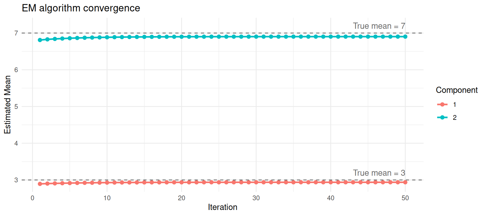
Convergence of mean estimates across EM iterations.
Now let’s overlay the estimated Gaussian components on the data.
x_grid <- seq(min(mixture) - 1, max(mixture) + 1, length.out = 500)
df_fitted <- data.frame(
x = rep(x_grid, 3),
density = c(
fit$weights[1] * dnorm(x_grid, fit$mu[1], fit$sigma[1]),
fit$weights[2] * dnorm(x_grid, fit$mu[2], fit$sigma[2]),
fit$weights[1] * dnorm(x_grid, fit$mu[1], fit$sigma[1]) +
fit$weights[2] * dnorm(x_grid, fit$mu[2], fit$sigma[2])
),
curve = rep(c("Component 1", "Component 2", "Mixture"),
each = length(x_grid))
)
ggplot() +
geom_histogram(data = df_mix, aes(x = value, y = after_stat(density)),
bins = 50, fill = "steelblue", colour = "white", alpha = 0.5) +
geom_line(data = df_fitted, aes(x = x, y = density, colour = curve),
linewidth = 1) +
scale_colour_manual(values = c("Component 1" = "#E69F00",
"Component 2" = "#56B4E9",
"Mixture" = "red")) +
labs(x = "Value", y = "Density", colour = "",
title = "Fitted Gaussian mixture model") +
theme_minimal()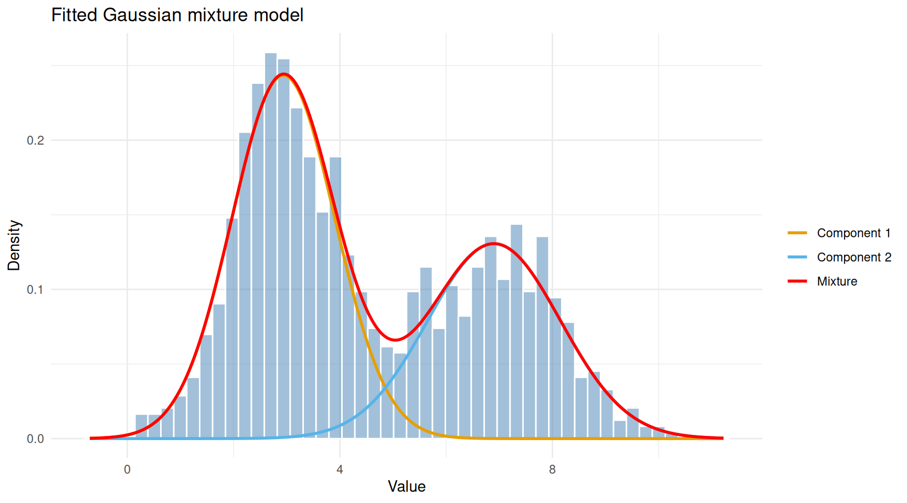
Observed data with fitted Gaussian components overlaid.
The red curve (overall mixture) follows the shape of the histogram, while the orange and blue curves show the two estimated components. Each component captures one of the two humps in the data.
A distinctive feature of GMMs is soft (probabilistic) clustering. Instead of assigning each point to exactly one group, a GMM gives each point a probability of belonging to each component. Points in the overlap region between two Gaussians will have intermediate probabilities.
df_resp <- data.frame(
value = mixture,
responsibility = fit$responsibilities[, 2]
)
ggplot(df_resp, aes(x = value, y = 0, colour = responsibility)) +
geom_jitter(height = 0.4, size = 0.8, alpha = 0.7) +
scale_colour_gradient(low = "#E69F00", high = "#56B4E9",
name = "P(Component 2)") +
labs(x = "Value", y = "",
title = "Soft assignments: each point has a probability for each component") +
theme_minimal() +
theme(axis.text.y = element_blank(), axis.ticks.y = element_blank())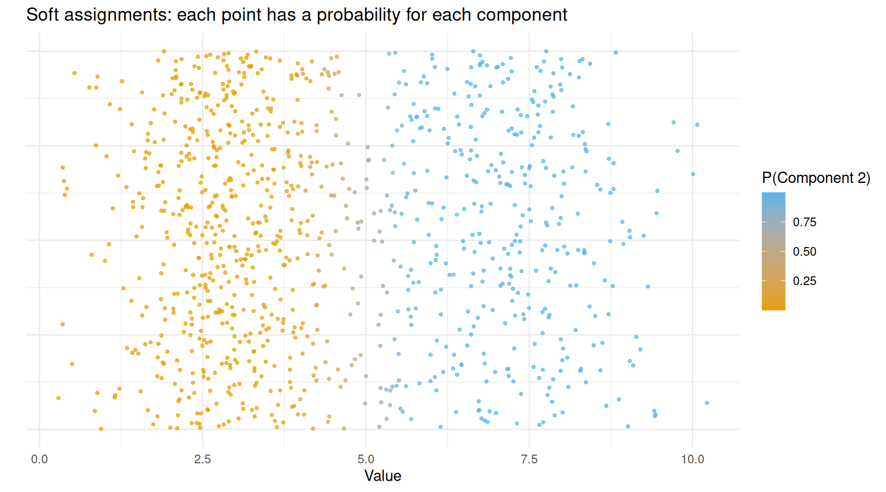
Data points coloured by their responsibility (probability of belonging to component 2).
Points clearly on the left (low values) are coloured orange — the model is confident they belong to component 1. Points on the right are blue — confidently component 2. Points in the middle have intermediate colours, reflecting genuine uncertainty.
If you need hard assignments (each point in exactly one group), you simply assign each point to the component with the highest responsibility:
hard_labels <- apply(fit$responsibilities, 1, which.max)
agreement <- mean(hard_labels == true_labels)
cat(sprintf("Agreement with true labels: %.1f%%\n", agreement * 100))Agreement with true labels: 96.9%In practice, you would not write the EM algorithm yourself. The
mclust package in R provides a robust, well-tested
implementation that also handles:
mc <- Mclust(mixture)
summary(mc)----------------------------------------------------
Gaussian finite mixture model fitted by EM algorithm
----------------------------------------------------
Mclust V (univariate, unequal variance) model with 2 components:
log-likelihood n df BIC ICL
-2073.08 1000 5 -4180.699 -4261.851
Clustering table:
1 2
595 405 Mclust tests a range of component numbers (by default 1
to 9) and selects the one with the best BIC. Let’s see the BIC
values.
plot(mc, what = "BIC")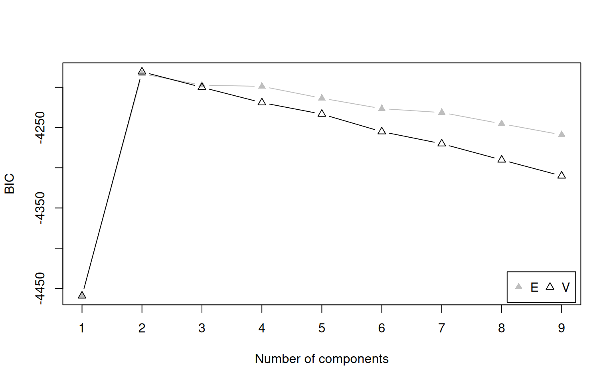
BIC values for different numbers of components. Higher BIC is better in mclust’s convention.
The model with 2 components should have the highest BIC, matching the truth.
The Bayesian Information Criterion (BIC) balances two competing goals:
BIC penalises model complexity:
\[\text{BIC} = 2 \ln(\hat{L}) - p \ln(n)\]
where \(\hat{L}\) is the maximised
likelihood, \(p\) is the number of
parameters, and \(n\) is the sample
size. The penalty \(p \ln(n)\) grows
with the number of parameters, discouraging unnecessarily complex
models. We pick the model with the highest BIC (in
mclust’s sign convention).
cat("Selected number of components:", mc$G, "\n\n")Selected number of components: 2 cat("Estimated means:\n")Estimated means:print(round(mc$parameters$mean, 2)) 1 2
2.93 6.88 cat("\nEstimated mixing weights:\n")
Estimated mixing weights:print(round(mc$parameters$pro, 2))[1] 0.59 0.41cat("\nEstimated variances:\n")
Estimated variances:print(round(mc$parameters$variance$sigmasq, 2))[1] 0.93 1.59df_mclust <- data.frame(
value = mixture,
classified = factor(mc$classification),
uncertainty = mc$uncertainty
)
ggplot(df_mclust, aes(x = value, fill = classified)) +
geom_histogram(aes(y = after_stat(density)), bins = 50,
alpha = 0.6, position = "identity", colour = "white") +
labs(x = "Value", y = "Density", fill = "Assigned Component",
title = "mclust classification of mixture data") +
theme_minimal()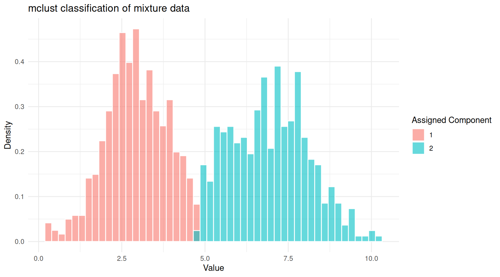
mclust classification of the mixture data.
mclust also provides an uncertainty
measure for each point. Points in the overlap zone will have higher
uncertainty.
ggplot(df_mclust, aes(x = value, y = uncertainty, colour = classified)) +
geom_point(alpha = 0.5, size = 1) +
labs(x = "Value", y = "Uncertainty", colour = "Component",
title = "Classification uncertainty") +
theme_minimal()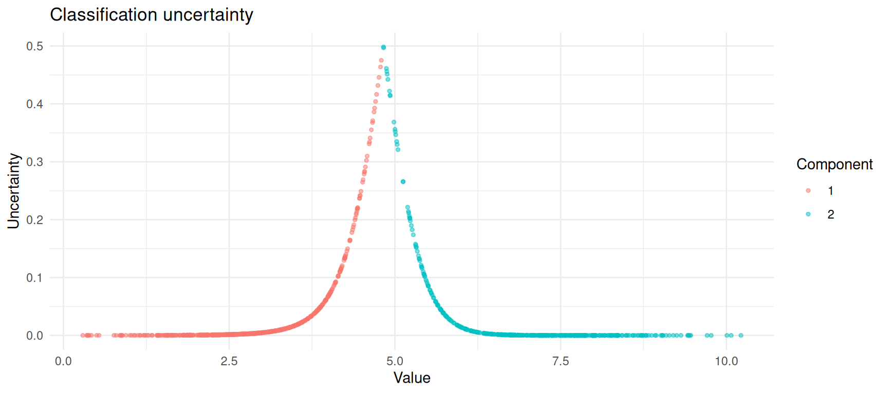
Classification uncertainty is highest where the two components overlap.
The faithful dataset in R records eruption durations and
waiting times for the Old Faithful geyser in Yellowstone National Park.
It is a classic example of bimodal data: there are short eruptions with
short waiting times and long eruptions with long waiting times.
ggplot(faithful, aes(x = eruptions, y = waiting)) +
geom_point(alpha = 0.6) +
labs(x = "Eruption Duration (minutes)", y = "Waiting Time (minutes)",
title = "Old Faithful Geyser Data") +
theme_minimal()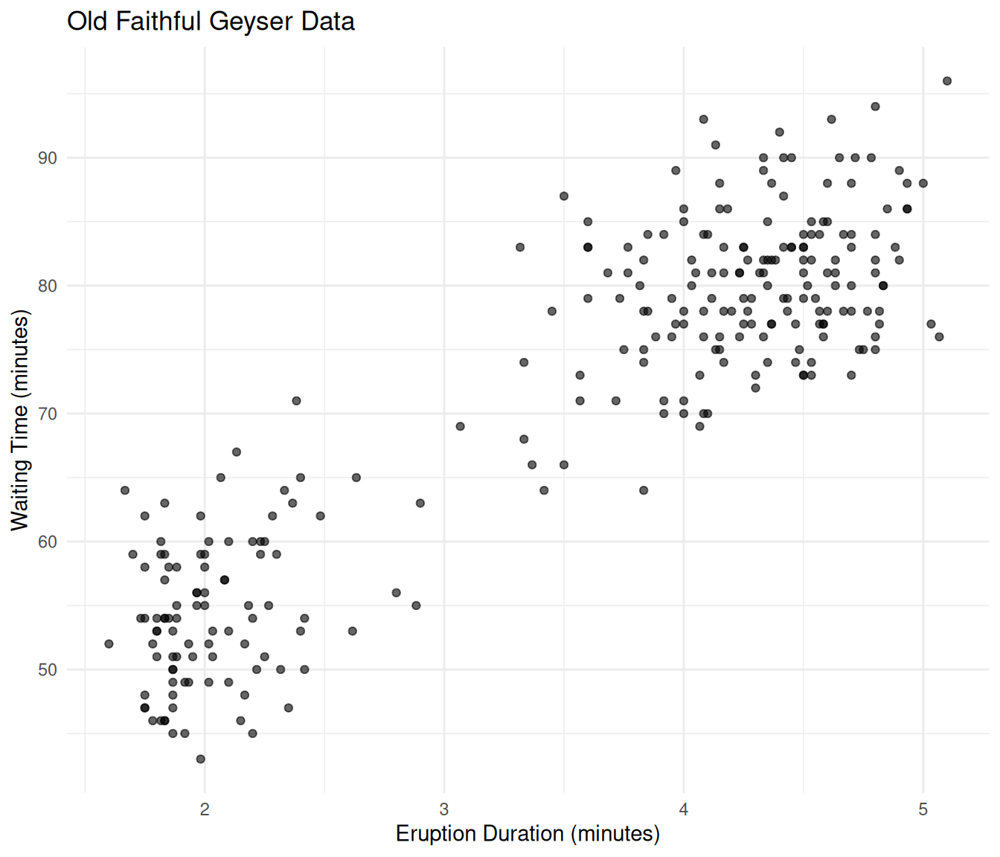
Old Faithful eruption data showing two clusters.
Let’s fit a GMM to this two-dimensional data.
mc_faithful <- Mclust(faithful)
summary(mc_faithful)----------------------------------------------------
Gaussian finite mixture model fitted by EM algorithm
----------------------------------------------------
Mclust EEE (ellipsoidal, equal volume, shape and orientation) model with 3
components:
log-likelihood n df BIC ICL
-1126.326 272 11 -2314.316 -2357.824
Clustering table:
1 2 3
40 97 135 df_faithful <- data.frame(
eruptions = faithful$eruptions,
waiting = faithful$waiting,
component = factor(mc_faithful$classification),
uncertainty = mc_faithful$uncertainty
)
ggplot(df_faithful, aes(x = eruptions, y = waiting,
colour = component, size = uncertainty)) +
geom_point(alpha = 0.7) +
scale_size_continuous(range = c(1, 4), name = "Uncertainty") +
labs(x = "Eruption Duration (minutes)", y = "Waiting Time (minutes)",
colour = "Component",
title = "GMM classification of Old Faithful data") +
theme_minimal()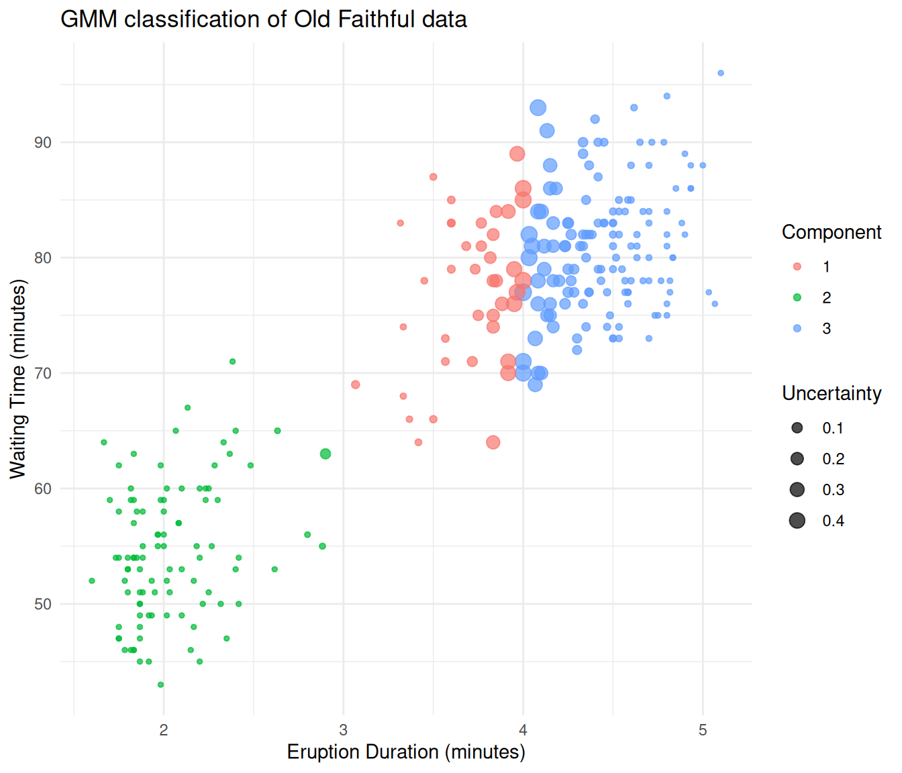
Old Faithful data classified by a Gaussian mixture model.
The GMM separates the two eruption types cleanly. Points at the boundary between groups are displayed larger because they have higher classification uncertainty.
GMMs are a good choice when:
GMMs may not be ideal when:
| Concept | What it means |
|---|---|
| Gaussian | The normal (bell curve) distribution, defined by a mean and standard deviation |
| Mixture | A weighted combination of several distributions |
| Component | One of the Gaussian distributions in the mixture |
| Mixing weight (\(\pi_k\)) | The proportion of data belonging to component \(k\) |
| EM algorithm | An iterative procedure that alternates between estimating group memberships (E-step) and updating parameters (M-step) |
| Responsibility | The probability that a data point belongs to a particular component |
| BIC | A criterion for choosing the number of components, balancing fit and simplicity |
The core idea is straightforward: if your data looks like it was
generated by several overlapping bell curves, a GMM can recover those
curves and tell you which data points likely belong to which group. The
EM algorithm does the heavy lifting, and tools like mclust
make it accessible in just a few lines of R code.
sessionInfo()R version 4.5.2 (2025-10-31)
Platform: x86_64-pc-linux-gnu
Running under: Ubuntu 24.04.4 LTS
Matrix products: default
BLAS: /usr/lib/x86_64-linux-gnu/openblas-pthread/libblas.so.3
LAPACK: /usr/lib/x86_64-linux-gnu/openblas-pthread/libopenblasp-r0.3.26.so; LAPACK version 3.12.0
locale:
[1] LC_CTYPE=en_US.UTF-8 LC_NUMERIC=C
[3] LC_TIME=en_US.UTF-8 LC_COLLATE=en_US.UTF-8
[5] LC_MONETARY=en_US.UTF-8 LC_MESSAGES=en_US.UTF-8
[7] LC_PAPER=en_US.UTF-8 LC_NAME=C
[9] LC_ADDRESS=C LC_TELEPHONE=C
[11] LC_MEASUREMENT=en_US.UTF-8 LC_IDENTIFICATION=C
time zone: Etc/UTC
tzcode source: system (glibc)
attached base packages:
[1] stats graphics grDevices utils datasets methods base
other attached packages:
[1] ggplot2_4.0.2 mclust_6.1.2 workflowr_1.7.2
loaded via a namespace (and not attached):
[1] gtable_0.3.6 jsonlite_2.0.0 dplyr_1.2.0 compiler_4.5.2
[5] promises_1.5.0 tidyselect_1.2.1 Rcpp_1.1.1 stringr_1.6.0
[9] git2r_0.36.2 callr_3.7.6 later_1.4.7 jquerylib_0.1.4
[13] scales_1.4.0 yaml_2.3.12 fastmap_1.2.0 R6_2.6.1
[17] labeling_0.4.3 generics_0.1.4 knitr_1.51 tibble_3.3.1
[21] rprojroot_2.1.1 RColorBrewer_1.1-3 bslib_0.10.0 pillar_1.11.1
[25] rlang_1.1.7 cachem_1.1.0 stringi_1.8.7 httpuv_1.6.16
[29] xfun_0.56 S7_0.2.1 getPass_0.2-4 fs_1.6.6
[33] sass_0.4.10 otel_0.2.0 cli_3.6.5 withr_3.0.2
[37] magrittr_2.0.4 ps_1.9.1 grid_4.5.2 digest_0.6.39
[41] processx_3.8.6 rstudioapi_0.18.0 lifecycle_1.0.5 vctrs_0.7.1
[45] evaluate_1.0.5 glue_1.8.0 farver_2.1.2 whisker_0.4.1
[49] rmarkdown_2.30 httr_1.4.8 tools_4.5.2 pkgconfig_2.0.3
[53] htmltools_0.5.9
sessionInfo()R version 4.5.2 (2025-10-31)
Platform: x86_64-pc-linux-gnu
Running under: Ubuntu 24.04.4 LTS
Matrix products: default
BLAS: /usr/lib/x86_64-linux-gnu/openblas-pthread/libblas.so.3
LAPACK: /usr/lib/x86_64-linux-gnu/openblas-pthread/libopenblasp-r0.3.26.so; LAPACK version 3.12.0
locale:
[1] LC_CTYPE=en_US.UTF-8 LC_NUMERIC=C
[3] LC_TIME=en_US.UTF-8 LC_COLLATE=en_US.UTF-8
[5] LC_MONETARY=en_US.UTF-8 LC_MESSAGES=en_US.UTF-8
[7] LC_PAPER=en_US.UTF-8 LC_NAME=C
[9] LC_ADDRESS=C LC_TELEPHONE=C
[11] LC_MEASUREMENT=en_US.UTF-8 LC_IDENTIFICATION=C
time zone: Etc/UTC
tzcode source: system (glibc)
attached base packages:
[1] stats graphics grDevices utils datasets methods base
other attached packages:
[1] ggplot2_4.0.2 mclust_6.1.2 workflowr_1.7.2
loaded via a namespace (and not attached):
[1] gtable_0.3.6 jsonlite_2.0.0 dplyr_1.2.0 compiler_4.5.2
[5] promises_1.5.0 tidyselect_1.2.1 Rcpp_1.1.1 stringr_1.6.0
[9] git2r_0.36.2 callr_3.7.6 later_1.4.7 jquerylib_0.1.4
[13] scales_1.4.0 yaml_2.3.12 fastmap_1.2.0 R6_2.6.1
[17] labeling_0.4.3 generics_0.1.4 knitr_1.51 tibble_3.3.1
[21] rprojroot_2.1.1 RColorBrewer_1.1-3 bslib_0.10.0 pillar_1.11.1
[25] rlang_1.1.7 cachem_1.1.0 stringi_1.8.7 httpuv_1.6.16
[29] xfun_0.56 S7_0.2.1 getPass_0.2-4 fs_1.6.6
[33] sass_0.4.10 otel_0.2.0 cli_3.6.5 withr_3.0.2
[37] magrittr_2.0.4 ps_1.9.1 grid_4.5.2 digest_0.6.39
[41] processx_3.8.6 rstudioapi_0.18.0 lifecycle_1.0.5 vctrs_0.7.1
[45] evaluate_1.0.5 glue_1.8.0 farver_2.1.2 whisker_0.4.1
[49] rmarkdown_2.30 httr_1.4.8 tools_4.5.2 pkgconfig_2.0.3
[53] htmltools_0.5.9